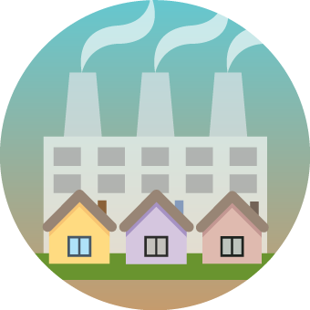

Linking Air Quality and Health
By Albert Navarro-GallinadResearchers Night Activity
30th September 2022
Start
Number of games played:
What is air quality?
Air quality is a measure of how clean or polluted the air is. Polluted air can be bad for our health and the environment we live in. For example, toxic particles can go into our lungs and blood putting us at risk of having a disease.

Image source: Minnesota PCA.
NextHow can doctors use air quality information for our health?
Doctors can link air quality information from our environment with health events to study the origin of the problems.
But linking the information can be difficult. That is why, computer scientists help doctors by making the link easy for them.
Image source: Usability Geek.
Let's try to be a computer scientist!Link air quality and health
Select the country, place, weather and pollution related to the health event.
Send to the doctor
Answer from the doctor
Thanks for helping me linking the air quality data! I will follow the case closely
but the number of health events linked is not enough to reach a conclusion.
Maybe you could link more health events for me ... Let's say
3
more! Link more health events